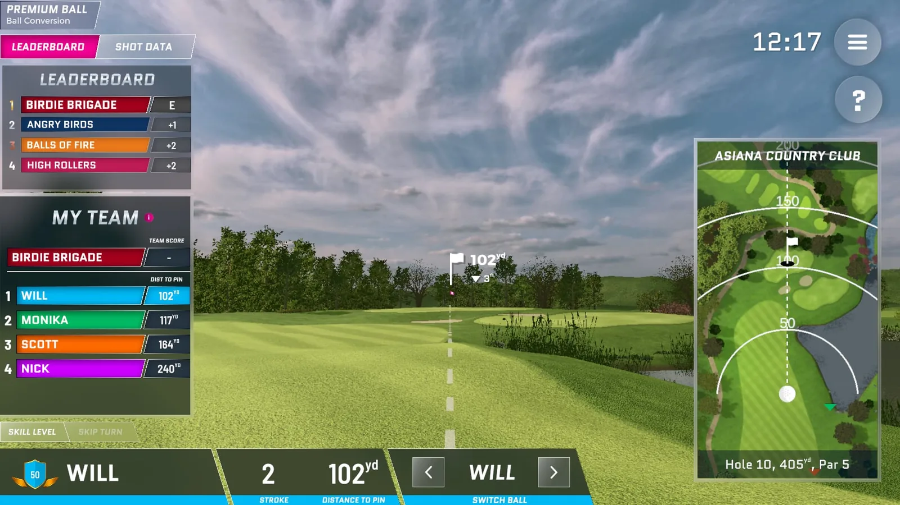
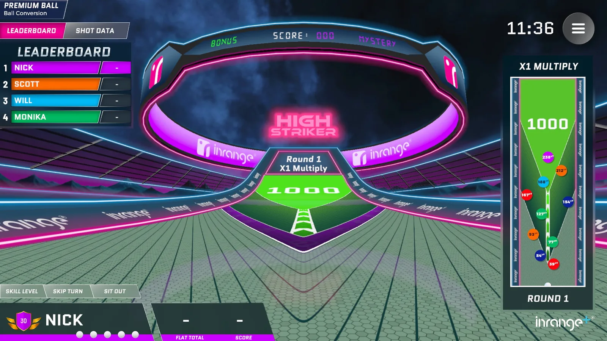
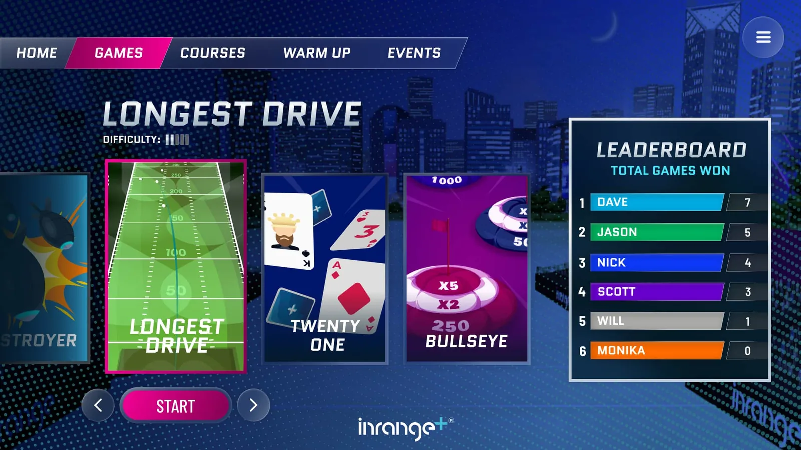
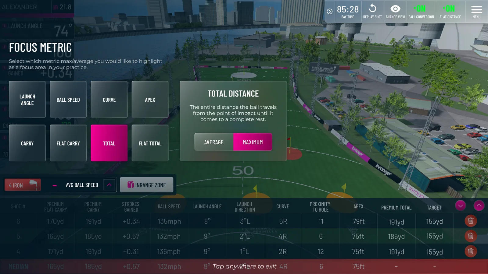

P–01
- Engine
- Unity
- Platform
- Kiosk / mobile
- Role
- Lead developer
- Status
- Shipped
InRange Golf
Commercial golf simulator on in-bay kiosk hardware. Lead developer on a new game title and on a large training system spanning much of the product. Also the single-player UI overhaul, camera system extensions, and an internal C# tool that simulates shots for testing.
Shaders in ShaderGraph and hand-written HLSL. Balancing and design on the new title — a different shape to anything else in the product, where animation and polish carried most of the feel.



